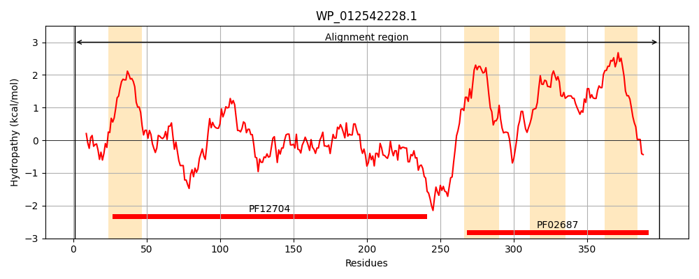
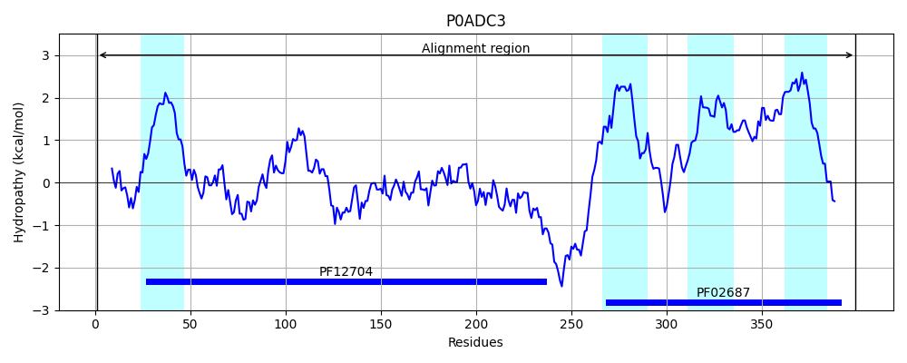
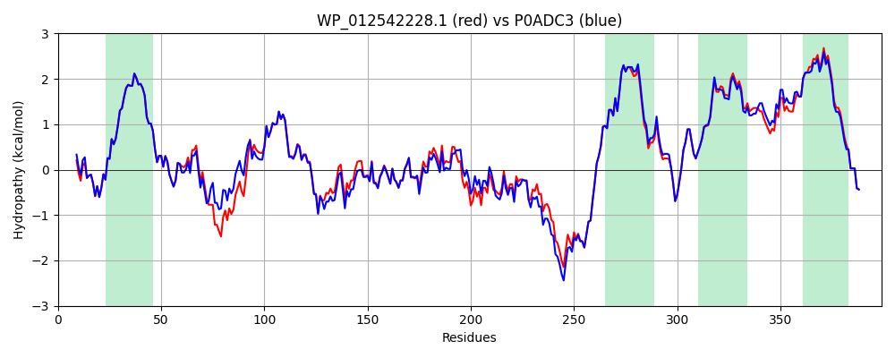

Hit Accession: P0ADC3
Hit TCID: 3.A.1.125.1
Hit Description: gnl|BL_ORD_ID|8748 gnl|TC-DB|P0ADC3|3.A.1.125.1 Lipoprotein-releasing system transmembrane protein lolC - Escherichia coli.
Mach Len: 399
e:0.000000
Query TMS Count : 4
Hit TMS Count: 4
TMS-Overlap Score: 4.850000
Predicted Substrates:CHEBI:6495;lipoprotein
BLAST Alignment:
Score: 1829 , Bit scores: 709 bits, E-value: 0.0e+00, Alignment length: 399, Percentage identity: 90
Query: 1 MYQPAALFIGLRYMRGRAADRFGRFVSWLSTIGITLGVMALVTVLSVMNGFERELQNNILGLMPQAILSAKQGSVNPQQLPEREAKLQGVTRVAPITTGDVVLQSARSVAVGVMLGIDPAQNDPLTPYLVNVKQSDLQAGKYNVILGEQLAGQLGVNRGDQIRVMVPSASQFTPMGRVPSQRLFTVIGTFAANSEVDGYQMLTNIDDASRLMRYPLGNITGWRLWLDKPLQVDTLSQQTLPPGTQWQDWRERKGELFQAVRMEKNMMGLLLSLIVAVAAFNIITSLGMMVMEKQGEVAILQTQGLTPRQIMAVFMVQGASAGIVGALLGAVLGALLASQLNNLMPIIGAFLDGAALPVAIEPLQVIVIALVAMVLALLSTLYPSWRAAATQPAEALRYE 399
MYQP ALFIGLRYMRGRAADRFGRFVSWLSTIGITLGVMALVTVLSVMNGFERELQNNILGLMPQAILS++ GS+NPQQLPE KL GV RVAPITTGDVVLQSARSVAVGVMLGIDPAQ DPLTPYLVNVKQ+DL+ GKYNVILGEQLA QLGVNRGDQIRVMVPSASQFTPMGR+PSQRLF VIGTFAANSEVDGY+ML NI+DASRLMRYP GNITGWRLWLD+PL+VD+LSQQ LP G++WQDWR+RKGELFQAVRMEKNMMGLLLSLIVAVAAFNIITSLG+MVMEKQGEVAILQTQGLTPRQIM VFMVQGASAGI+GA+LGA LGALLASQLNNLMPIIG LDGAALPVAIEPLQVIVIALVAM +ALLSTLYPSWRAAATQPAEALRYE
Sbjct: 1 MYQPVALFIGLRYMRGRAADRFGRFVSWLSTIGITLGVMALVTVLSVMNGFERELQNNILGLMPQAILSSEHGSLNPQQLPETAVKLDGVNRVAPITTGDVVLQSARSVAVGVMLGIDPAQKDPLTPYLVNVKQTDLEPGKYNVILGEQLASQLGVNRGDQIRVMVPSASQFTPMGRIPSQRLFNVIGTFAANSEVDGYEMLVNIEDASRLMRYPAGNITGWRLWLDEPLKVDSLSQQKLPEGSKWQDWRDRKGELFQAVRMEKNMMGLLLSLIVAVAAFNIITSLGLMVMEKQGEVAILQTQGLTPRQIMMVFMVQGASAGIIGAILGAALGALLASQLNNLMPIIGVLLDGAALPVAIEPLQVIVIALVAMAIALLSTLYPSWRAAATQPAEALRYE 399 | Protein Hydropathy Plots: |
|---|
|  |  |
Pairwise Alignment-Hydropathy Plot:
|
|---|
|  |